<!DOCTYPE html>
<html lang="en">

	<head>
		<meta charset="utf-8">
<meta http-equiv="X-UA-Compatible" content="IE=edge">
<meta name="viewport" content="width=device-width, initial-scale=1" />


	<title>Economics Note · Tao Ma</title>


<meta name="description" content="Chapter 1: Analyzing Economic Problems  Contrast the two main branches of economics—microeconomics and macroeconomics.  Describe the three main analytical to...">

<link rel="icon" href="http://localhost:4000/assets/favicon.png">
<link rel="apple-touch-icon" href="http://localhost:4000/assets/touch-icon.png">
<link rel="stylesheet" href="http://localhost:4000/assets/core.css">
<link rel="canonical" href="http://localhost:4000/economics-note">
<link rel="alternate" type="application/atom+xml" title="Tao Ma" href="http://localhost:4000/feed.xml" />


<script type="text/javascript" src="https://cdnjs.cloudflare.com/ajax/libs/mathjax/2.7.2/MathJax.js?config=TeX-AMS-MML_HTMLorMML"></script>


	</head>

	<body>

		<aside class="logo">

	

	<a href="http://localhost:4000/">
		
	</a>
	<span class="logo-prompt code">Back to Index</span>
</aside>
<br />
<section>
		And hello to u too:) By clicking the above icon, u can come back to index any time, or u can eneter my personal info page. 
		<br />
		<em><strong>The picture is randomly generated every time u click the icon, I have nothing to do with any of the content of the pictures(ﾟ∀ﾟ)</strong></em>
.
</section>


		<div id="content">
			<article>

	<div class="center">
		<h1 class="title">Economics Note</h1>
		<time class="code">May 11, 2020</time>
	</div>

	<div class="divider"></div>

	<h2 id="chapter-1-analyzing-economic-problems">Chapter 1: Analyzing Economic Problems</h2>
<ul>
  <li>Contrast the two main branches of economics—microeconomics and macroeconomics.</li>
  <li><em>Describe the three main analytical tools of microeconomics—constrained optimization, equilibrium analysis, and comparative statics—and recognize examples of each of these tools.</em></li>
  <li>Explain the difference between positive and normative analysis.</li>
</ul>

<p><strong><em>Economics is the science that deals with the allocation of limited resources to satisfy unlimited human wants</em></strong></p>

<p><strong><em>That is why economics is often described as the science of constrained choice.</em></strong></p>

<ul>
  <li><strong>Resource</strong>
    <ul>
      <li>Labor(劳动力)</li>
      <li>Managerial talent（人才管理）</li>
      <li>Capital（资本）
        <ul>
          <li>在经济学，资本， 是一种生产要素，为用于生产的耐久财，即资金、厂房、设备、材料等物质资源，用来生产其他商品或产生收入的累积物力与财务资源.</li>
        </ul>
      </li>
      <li>Raw Material
        <ul>
          <li>A raw material, also known as a feedstock, unprocessed material, or primary commodity, is a basic material that is used to produce goods, finished products, energy, or intermediate materials that are feedstock for future finished products.</li>
        </ul>
      </li>
    </ul>
  </li>
  <li>资本和原材料是一样的吗？原材料是资本的一部分吗？
    <ul>
      <li>资本和原材料不一样，最大的区别在于<strong>原材料会变成商品的一部分，而资本不会</strong>，所以对于资本有更加精准的定义：具有以下特性的商品，即为资本：
        <ul>
          <li>在制造其他商品时会使用到（因此是生产要素中的一项）</li>
          <li>不会变为其他商品中的一部分（和原料或半成品不同），在制造过程中也不会将此商品耗尽（不过资本会有折旧．也是企业支出的一部分）。</li>
          <li>需要经过生产制造流程才能得到（和生产要素中的“土地”不同，后者是指自然存在的资产，例如矿产）。</li>
        </ul>
      </li>
      <li>比如打印机本来属于资本，因为在制造其他商品时会用到，但是如果他同时是商品的一部分，那他就不是资本了</li>
    </ul>
  </li>
  <li>Microeconomics: studies the economic behavior of individual economic decision makers, such as a consumer, a worker, a firm, or a manager. It also analyzes the behavior of individual households, industries, markets, labor unions, or trade associations. 微观经济学要解决的三个问题
    <ul>
      <li>What goods and services will be produced and in what quantities?</li>
      <li>Who will produce the goods and services, and how?</li>
      <li>Who will receive the goods and services?</li>
    </ul>
  </li>
  <li>Macroeconomics: analyzes how an entire national economy performs. 所以宏观经济学的范围是卡死了，就是在国家的层面上讨论</li>
</ul>

<h3 id="three-key-analytical-tools">Three Key Analytical Tools</h3>
<ul>
  <li>经济学模型往往会选择性的抽象化或者忽视一些生活中的细节，经济学模型只关心真正在作用的事物。</li>
  <li>就和数学模型一样，经济学模型需要确定模型的输入和模型的输出
    <ul>
      <li><strong>Exogenous variable</strong>: the variable whose value is talem as given in a model. The value of an exogenous variable is determined by some process outside the model being examined. 感觉这个值跟函数的输入也不完全一样，因为作为一个函数他的输入对输出是有直接影响的，也就是说一个y之所以是y因为有这个函数模型加上这个x造成的，但这个exogenous variable可能只是众多变量的一种，并没有对结果造成影响，他的特点只有：determined outside。不过是不是只要放入了模型的，就暗示了会有影响呢？外生变量只对系统产生影响而不受系统影响</li>
      <li><strong>Endogenous variable</strong>: variable whose value is determined within the model being studied.也就是这个值在这个模型中决定的，可以看作是输出</li>
    </ul>
  </li>
</ul>

<h4 id="constrained-optimization">Constrained Optimization</h4>
<ul>
  <li>什么时候用：当决策者面对多种限制，并且需要作出决策时，这样的问题被称为Constrained Optimization Problems</li>
  <li>Constrained optimization problem可以被分为两部分
    <ul>
      <li><em>Objective function</em>：The relationship that the decision maker seeks to “optimize”
        <ul>
          <li>例子就是如果现在的问题是一个消费者想要通过购物去最大化自己的满足感。那么这里的objective function就是消费者在购买某一种商品之后他有多少满足感</li>
          <li>假设现在需要通过L和W去最大化Area（定位为LW）那么他的标识是 \(\mathop{max}\limits_{(L,W)}(LW)\ subject\ to\ {Set\ of\ constraint} \)</li>
        </ul>
      </li>
      <li>LW就是Objective Function</li>
      <li>Set of constrains</li>
    </ul>
  </li>
  <li>所以其实Objective function就一个简单的目标值足矣</li>
  <li>然后textbook举了个例子来阐述constrained optimization是怎样把人们从不明显的错误中给纠正过来，个人认为是废话。不过课本根据这个问题提出了经济学上的一个重要观点：<strong><em>The solution to any constrained optimization problem depends on the marginal impact of the decision variables on the value of the objective function.</em></strong>这句话的意思就是变量对于价值的边际影响决定了cop的答案，边际影响指得是每提高一个unit的变量，价值的改变是多少。</li>
  <li>然后根据例子，处理这种多变量的constrain optimization problem的时候，我们往往考虑增加边际影响更大的变量，边际影响指明了方向</li>
  <li><strong>The term marginal in microeconomics tells us how a dependent variable changes as a result of adding one unit of an independent variable</strong></li>
  <li><strong>Marginal Cost</strong>: Marginal cost measures the incremental impact of the last unit of the independent variable (output) on the dependent variable (total cost). 这个和刚刚的边际影响是相反的，这个考虑的是当价值提高一个unit，那么成本（变量）会提高多少，一般就是价格</li>
</ul>

<h4 id="equilibrium-analysis">Equilibrium Analysis</h4>
<ul>
  <li>什么叫做Equilibrium，Equilibrium平衡指的是in a system is a state or condition that will continue indefinitely as long as exogenous factors remain unchanged—that is, as long as no outside factor upsets the equilibrium.</li>
  <li>在一个竞争市场里面，平衡点出现在当市场clears的时候，即是需求曲线和供给曲线相交的时候</li>
  <li>提出了一个很高级的说法：了解为什么系统处于平衡，帮助我们了解为什么系统不处于平衡</li>
</ul>

<h4 id="comparative-statics">Comparative Statics</h4>
<ul>
  <li>used to examine how a change in an exogenous variable will affect the level of an endogenous variable in an economic model. 对于经济模型来说，这个模型分析方法是用来分析外生变量的变化会如何影响内生变量</li>
  <li>它主要是这么运作的：A “before and after” analysis 通过对比前后两种经济模型来得出结论
    <ul>
      <li>Initial：根据外生变量的初始值，得出内生变量的值</li>
      <li>After；根据变化之后的外生变量的值，得出内生变量的值</li>
    </ul>
  </li>
  <li>所以如果是comparative statics应用在constrained optimization problem的话，他要考虑的是，当外生变量的值变化时，从外生变量中生成的最优的内生变量会如何变化，也就是改变状态会如何影响选择</li>
</ul>

<h4 id="positive-and-normative-analysis">Positive and Normative Analysis</h4>
<ul>
  <li>Positive Analysis: <em>attempts to explain how an economic system works or to predict how it will change over time.</em>他问的问题是针对现象的：当怎么怎么样，会怎么怎么样？他的关注点是后面的会发生什么</li>
  <li>Normative Analysis: <em>typically focus on issues of social welfare, examining what will enhance or detract from the common good. In so doing, they often involve value judgments.</em>他问的问题则是针对行为的：我们该做什么。所以认为positive analysis是normative analysis的子问题，也就是说positive analysis可以归约到normative analysis.
    <ul>
      <li>Normative economics focuses on the value of economic fairness, or what the economy “should be” or “ought to be.”</li>
    </ul>
  </li>
  <li>While positive economics is based on fact and cannot be approved or disapproved, normative economics is based on value judgments.</li>
  <li>看到了一个反对最低工资上调的说法：上调最低工资其实是把收入转移给了没有技术的员工。如果想要把收入转移给某类人，还有一种做法是从一般税收收入中支付转移的费用。这样做有两个好处:一是将负担分摊到所有纳税人身上，二是让政客们为自己的行为负责。但是通过提高最低工资的办法，只会让这个担子全压在雇主身上，如果最低工资上调，雇主只可以多付工资，每年的成本上涨，这上涨的成本无异于前种办法的征税，唯一的区别是政策设计者可以告诉你他没有提高税收</li>
  <li>Positive analysis attempts to explain how an economic system works and to predict how the endogenous variables will change as exogenous variables change. Normative analysis considers prescriptive questions such as “What should be done?” Normative studies introduce value judgments into the analysis.</li>
</ul>

<h2 id="chapter-2-demand-and-supply-analysis">Chapter 2: Demand and Supply Analysis</h2>

<ul>
  <li>Describe the <strong>three main building blocks of supply and demand analysis</strong>––demand curves, supply curves, and the concept of market equilibrium.</li>
  <li>Analyze how changes in exogenous variables shift the demand and supply curves and thus change the equilibrium price and quantity.</li>
  <li>Explain the concept of <strong>price elasticity.</strong></li>
  <li>Calculate the price elasticity of demand for specific demand curves.</li>
  <li>Explain how price elasticity of demand is related to total revenue.</li>
  <li>Discuss the factors that determine the price elasticity of demand.</li>
  <li><strong>Contrast the market-level price elasticity of demand with the brand-level price elasticity of demand.</strong></li>
  <li>Explain and contrast <strong>other elasticities</strong>: the income elasticity of demand, the cross-price elasticity of demand, and the price elasticity of supply.</li>
  <li>Indicate why the short-run price elasticities of demand and supply may differ from the long-run price elasticities of demand and supply.</li>
  <li>Use <strong>“back-of-the-envelope”</strong> techniques to determine key properties of demand and supply curves with only fragmentary data on prices, quantities, or elasticities.</li>
</ul>

<h3 id="21-demand-supply-and-market-equilibrium">2.1 Demand, Supply, and Market Equilibrium</h3>
<ul>
  <li>目标分析市场：
    <ul>
      <li>Perfectly Competitive Market</li>
      <li>完全竞争市场comprise large numbers of buyers and sellers。</li>
      <li>存在许多的买家/卖家，所以单个的买家/卖家无法决定价格，他们只能接受市场决定的整体的价格(<em>price-taking</em>)</li>
    </ul>
  </li>
  <li>一个市场可以被以下三个维度划分：
    <ul>
      <li>Commodity: 在贩卖/购买的是什么货物</li>
      <li>Geography: 市场的地点在哪里</li>
      <li>Time</li>
    </ul>
  </li>
  <li><strong>Market Demand Curve</strong>: 就是市场需求曲线，A curve that shows us the quantity of goods that con- sumers are willing to buy at different prices.</li>
  <li><strong>Derived Demand</strong>: Demand for a good that is derived from the produc- tion and sale of other goods. Derived demand is demand for a factor of production or intermediate good that occurs as a result of the demand for another intermediate or final good. 也就是说derived demand这个需求是基于别的最终产品的需求上的，比如我想要的是玉米汁，但是玉米是玉米汁的原材料，所以我对玉米的需求是基于我对玉米汁的需求</li>
  <li><strong>Direct Demand</strong>: Demand for a good that comes from the desire of buyers to directly consume the good itself. 就是我对于玉米的需求来源于我本身想要消费玉米，而像在上面举的例子里面的direct demand就是我对于玉米汁的需求</li>
  <li>When we draw the demand curve, we assume that all other factors that affect the quantity demanded are fixed. Demand curve只探讨价格和需求的关系</li>
  <li><strong>Law of demand</strong>: The inverse relationship between price and quantity demanded, holding all other factors that influence demand fixed也就是价格越高，需求就越小，但是有些杠精就会跑出来说了，哎呀奢侈品就不一样，价格越高越多人喜欢，需求就更大，不过其实这样想的话，因为我们多考虑了一个变量“优越感”，优越感越高需求越大，而价格越高优越感越干，因为需求曲线只在乎价格上的影响，所以如果我们控制优越感不变，价格越高，需求还是越少的</li>
  <li><strong>Market Supply Curve</strong>：A curve that shows us the total quantity of goods that their suppliers are willing to sell at different prices. 就是简单的市场供给曲线。Supply里面包括当年生产的也包括之前的库存</li>
  <li><strong>Law of supply</strong>：The positive relationship between price and quantity supplied, when all other factors that influence supply are held fixed. 意即价格越高，供给者会供给的产品越多</li>
  <li><strong>Factors of production</strong>：Resources such as labor and raw materials that are used to produce a good.</li>
  <li>很多东西，包括上面的生产要素，都可以影响供给的量，比如别的产品的价格也会影响供给的量。和供给曲线一样，supply curve也只探讨价格和供给的关系</li>
  <li><strong>Market Equilibrium</strong>：The point where the quantity demanded equals the quantity supplied, so the market clears</li>
  <li><strong>Excess Supply</strong>：当价格偏高，生产者愿意供给比需求者需求更多的商品 A situation in which the quantity supplied at a given price exceeds the quantity demanded. 在这种情况下，价格会变低，趋于平衡</li>
  <li><strong>Excess Demand</strong>：当价格偏低，消费者需求比生产者愿意供给的更多的商品 A situation in which the quantity demanded at a given price exceeds the quantity supplied 在这种情况下，价格会变高，趋于平衡</li>
  <li><strong>价格属于外生变量还是内生变量</strong>：值得注意的一个问题是，价格和数量都属于内生变量，因为价格“无法被单一的经济决定者所决定”，他是一个必须要通过供给曲线和需求曲线来决定的值，他是由模型产生的值，所以价格属于内生变量，并且这个模型基本上只在乎处于平衡状态下的数量和价格</li>
  <li>题型：根据书上的边做边学，这方面的题型有：
    <ul>
      <li>给你需求数量关于价格的表达式/供给数量关于价格的表达式，再给你个函数取值，求数量/价格的值（弱智问题）</li>
      <li>和上面一样，给你提供两个表达式，然后求他们的市场平均状态（价格+供给），这个就令两个表达式相等求得价格再带回去就好了
        <h4 id="shifts-in-supply-and-demand">Shifts in Supply and Demand</h4>
      </li>
    </ul>
  </li>
  <li><strong>Shift in either supply or demand</strong>:
    <ul>
      <li>首先这个东西要知道，只有exogenous variable的变化会shift曲线，单是价格的变化体现在曲线的上面</li>
      <li><em>To do a comparative statics analysis</em>:
        <ol>
          <li>Determine how a particular exogenous variable affects demand/supply curve
            <ul>
              <li>比如如果人们的工资上涨了了，那么demand curve就会右移</li>
            </ul>

            <p>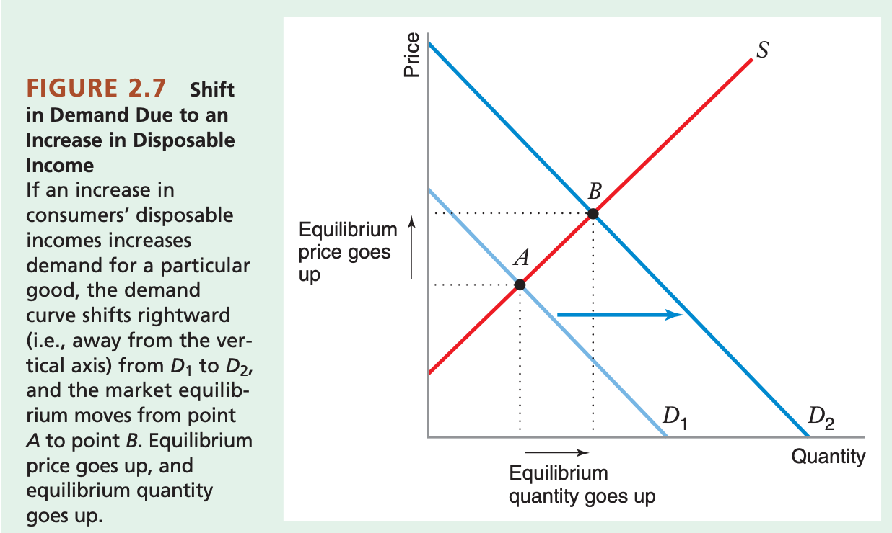</p>

            <ul>
              <li>又比如工人的wage rate变高了（这个rate貌似对应的是产品quantity而言），那么供给者生产成本变高了，所以供给曲线会向左移（供给的变少了）</li>
            </ul>
          </li>
        </ol>
      </li>
      <li>然后根据这个观察图的变化，得出了以下几个废话结论
        <ul>
          <li>Increase in demand + unchanged supply curve = higher equilibrium price and larger equilibrium quantity</li>
          <li>Decrease in supply + unchanged demand curve = higher equilibrium price and smaller equilibrium quantity</li>
          <li>Decrease in demand + unchanged supply curve = lower equilibrium price and smaller equilibrium quantity</li>
          <li>Increase in supply + unchanged demand curve = lower equilibrium price and larger equilibrium quantity</li>
        </ul>
      </li>
      <li>题型：根据书上的“边做边学”：
        <ul>
          <li>给你一个表达式，这个表达式往往不是只关于价格，而是像下面这个一样</li>
          <li>\( Q^{d} = 500-50P+10I \)</li>
          <li>都知道I是一个另外的因素，他就会告诉你一个I的取值，然后叫你求市场平衡状态</li>
          <li>或者是告诉你一个I的大致走向（上升还是下降），叫你探讨这个新的I会如何影响市场的平衡状态，这个东西基本上大致都能直接看出来</li>
        </ul>
      </li>
    </ul>
  </li>
  <li><strong>Shift in both supply and demand</strong>:
    <ul>
      <li>有些时候，不单单只是需求曲线/供给曲线单一会被影响，而是两条线都会一起移动，但是因为两条线都是一起移动，所以具体的移动之后对价格/数量造成的影响依然是要具体问题具体分析，要看因素对需求/供给造成的影响的具体大小才可以分析</li>
    </ul>

    <p>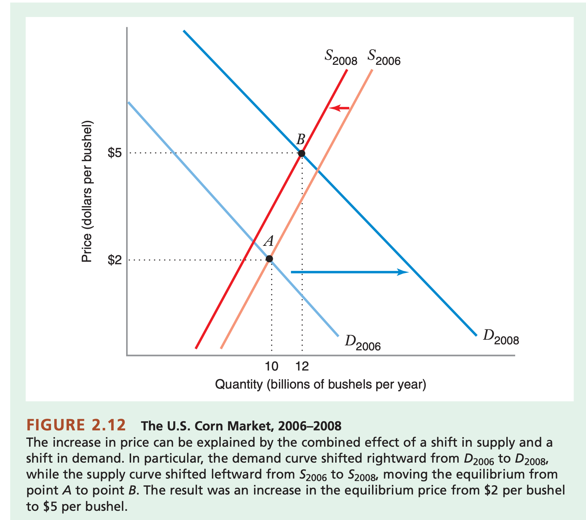</p>
  </li>
  <li>Price Index感觉是个不会考的内容，不过还挺有意思：
    <ul>
      <li>怎么看Price index：Values of the index are calcu- lated as a computer’s price that month as a percentage of the price of a comparable computer at the end of 1988. For example, suppose that the computer priced in December 1988 was $5,000. The index’s value at the end of 1990 was about 90, so a comparable computer would have cost about $4,500 (90 percent of $5,000) that month.</li>
      <li>这样子的逻辑是依照Bureau of Labor Statistics（BLS）</li>
    </ul>
  </li>
</ul>

<h3 id="22-own-price-elasticiyty-of-demand-价格弹性">2.2 Own-Price Elasticiyty of Demand 价格弹性</h3>
<ul>
  <li><strong>The price elasticity of demand measures the sensitivity of the quantity demanded to price</strong></li>
  <li>需求的价格弹性：需求的数量随商品价格的变动而变化的弹性。</li>
  <li>Notation：\( \epsilon_{Q, P} \)表示的是percentage change in quantity demanded Q brought by a 1 percent change in price P.</li>
</ul>

<script type="math/tex; mode=display">% <![CDATA[
\begin{aligned}
& \epsilon_{Q, P} = \frac{percentage\ change\ in\ quantity}{percentage\ change\ in\ price}\\
\end{aligned} %]]></script>

<script type="math/tex; mode=display">% <![CDATA[
\begin{aligned}
& (Q的变化量相对于当下Q的比例)percentage\ change\ in\ quantity=\frac{\Delta Q}{Q}  100%\\
\end{aligned} %]]></script>

<script type="math/tex; mode=display">% <![CDATA[
\begin{aligned}
& (P的变化量相对于当下的P的比例)percentage\ change\ in\ price=\frac{\Delta P}{P}  100%\\
\end{aligned} %]]></script>

<script type="math/tex; mode=display">% <![CDATA[
\begin{aligned}
& \epsilon_{Q,P} =\frac{\Delta Q}{\Delta P}\frac{P}{Q}
\end{aligned} %]]></script>

<ul>
  <li>具体的例子：For example, suppose that when the price of a good is $10 (P=10), the quantity demanded is 50 units (Q=50), and that when the price increases to $12 ( \( \Delta P=+2 \) ), the quantity demanded decreases to 45 units ( \( \Delta Q=-5 \) ). 那么直接强行带入公式就好了</li>
</ul>

<script type="math/tex; mode=display">% <![CDATA[
\begin{aligned}
& \epsilon_{Q,P} =\frac{\Delta Q}{\Delta P}\frac{P}{Q} = \frac{-5}{2}\frac{10}{50} = -0.5
\end{aligned} %]]></script>

<ul>
  <li>并且根据Law of demand，这个需求价格弹性必须是负的。</li>
  <li>根据算出来的需求价格弹性的不一样，可以为需求价格弹性分类：</li>
</ul>

<p>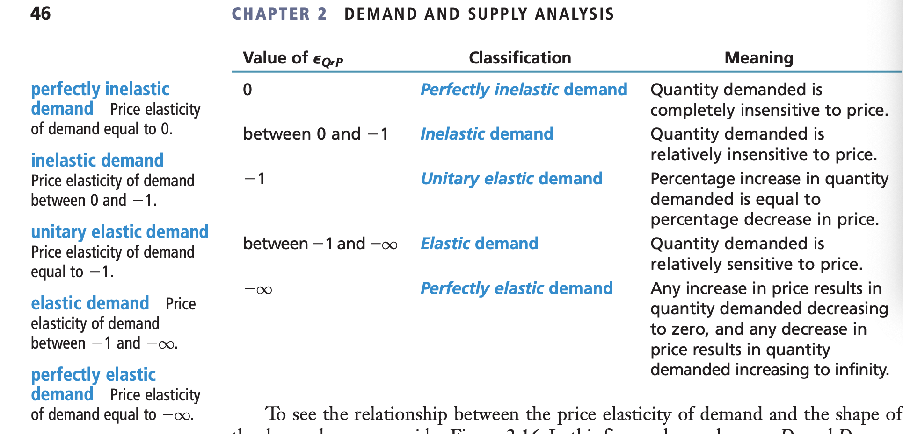</p>

<ul>
  <li>在看图的时候，如果横轴代表quantity，纵轴代表price，那么如果一条曲线的需求价格弹性越小（越elastic），那么他会显得更加水平（价格稍有变化会对数量带来很大的影响）；而数值比较大的（越不elastic）的曲线，则会显得更加垂直，价格的变化，对曲线不会带来太大的影响</li>
  <li>当一条曲线完全水平的时候，就是perfectly elastic -&gt; 只要价格变化，将不会有任何quantity，或者可以理解成，在价格P之下，任何数量的产品都可以被出售；当一条曲线完全垂直的时候，就是perfectly inelastic -&gt; 不管价格如何变动，数量都恒定</li>
  <li>题型：给定Q，P还有Q和P的变化量，计算需求价格弹性 -&gt;直接套公式</li>
</ul>

<h4 id="elastic-along-specific-demand-curves">Elastic along specific demand curves</h4>
<ul>
  <li><strong>Linear Demand Curve</strong>: 需求曲线是一条直线，表示为\( Q=a-bP \)，其中a代表了其他所有影响的因素，b则代表了需求数量会如何按照价格来变化</li>
  <li><strong>Inverse demand curve</strong>：有一条需求曲线，inverse demand curve就是基于这条需求曲线的一个price as a function of quantity。就是\( P=\frac{a}{b}- \frac{1}{b}Q \)
    <ul>
      <li>其中，<strong>choke price</strong>指的是\( \frac{a}{b} \)这个值，它的意义是当需求数量变为0时，他的价格为这个</li>
    </ul>
  </li>
  <li><strong>计算弹性公式在下面，最关键的就是要记住计算这个其实就是斜率（需求价格曲线）乘上比例</strong></li>
  <li><strong>Modified price elastic of demand</strong>: 根据以上的种种公式，可以推出一个恒定的价格需求弹性的公式：
    <ul>
      <li>所以其实这个东西的意义就是，\( \frac{P}{Q} \)这个函数的变化率，几何意义的话可以想成是一个曲面，再对这个曲面求导是要得到他的割面，而这个割面就代表了需求价格弹性</li>
      <li><strong>所以在计算的时候，拿到任何一个P关于Q的函数，或者是Q关于P的函数，都要先找到Q关于P的函数（如果直接给了当然更好），然后求出\( \frac{DQ}{DP} \)，再简单的带入表达式\( \frac{DQ}{DP}\frac{P}{Q} \)即可，有时候可以运用多种法则还可以化简</strong></li>
    </ul>
  </li>
</ul>

<script type="math/tex; mode=display">% <![CDATA[
\begin{aligned}
& \epsilon_{Q,P} =\frac{\Delta Q}{\Delta P}\frac{P}{Q} = -b\frac{P}{Q}
\end{aligned} %]]></script>

<ul>
  <li>又根据以上这个公式，得出了下面这张图，下面这张图的意义是，在线上不同的点的弹性各不一样，具体请看下图</li>
</ul>

<p>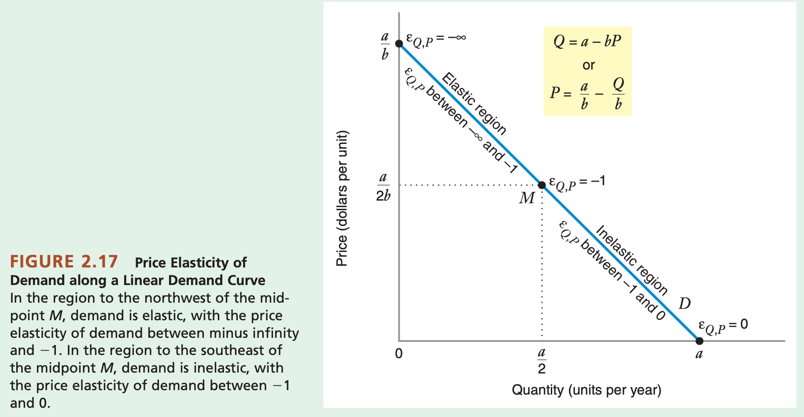</p>

<ul>
  <li>以上的两个region：Elastic region和Inelastic region分别代表了需求价格弹性在不同的区间中取的需求价格弹性，注意了，这个midpoint指的是价格midpoint</li>
  <li><strong>斜率和弹性的区别以及为什么不用斜率</strong>：斜率衡量的是绝对变化（unit of percentage），而需求价格弹性衡量的是百分比变化（1 percentage change in price）。那么为什么不用斜率呢？斜率衡量的单位是一个商品的一个unit，但是不同的商品的单位不一样，所以如果对比商品之间，连单位都无法控制一样的话，就没什么意义</li>
  <li><strong>Constant Elasticity Demand Curve</strong>：需求曲线是一个幂函数：\( Q=aP^{-b} \)，这样的需求曲线，他的需求价格弹性恒定是\( -b \).</li>
  <li><strong>题型</strong>：告诉你一条直线需求曲线/幂函数需求曲线，然后给你P和Q的取值，让你算具体的需求弹性，也很简单，看上面的公式就好</li>
  <li><strong>total revenue</strong>: Selling price times the quantity of product sold.</li>
  <li><strong>解读弹性</strong>：Consider the estimated elasticity of 0.107 for cigarettes in Table 2.1, which indicates that a 10 percent increase in the price of cigarettes would result in a 1.07 percent drop in the quantity of cigarettes demanded.</li>
  <li>影响需求弹性的因素：
    <ul>
      <li>Demand tends to be more price elastic when there are good substitutes for a product</li>
      <li>Demand tends to be more price elastic when a consumer’s expenditure on the product is large (either in absolute terms or as a fraction of total expenditures)</li>
      <li>Demand tends to be less price elastic when the product is seen by consumers as being a necessity.</li>
    </ul>
  </li>
  <li><strong>Market-level VS Brand-level</strong>：这个也很好理解，就是在市场层面的需求价格弹性绝对不等于在单一品牌层面的需求价格弹性。假设只有一个品牌的香烟涨价了，那么很有可能对于这个品牌的需求大大降低，但香烟整体的需求是不弹性的，这个品牌的消费者大可以去买别的品牌的香烟，Even if demand is inelastic at the market level, it can be highly elastic at the individual brand level. 而且根据观察可以得出的是，如果一个品牌的替代者越多，那么他的需求价格弹性的绝对值就越高。</li>
</ul>

<h3 id="23-other-elasticities">2.3 Other Elasticities</h3>
<ul>
  <li><strong>Income Elasticity of Demand</strong>: 顾名思义：the ratio of the percentage change of quantity demanded to the percentage change of income, holding price and all other determi- nants of demand constant.当工资变化percentage，需求会如何变化</li>
</ul>

<script type="math/tex; mode=display">% <![CDATA[
\begin{aligned}

& \epsilon_{Q, I}=\frac{\Delta Q}{\Delta I}\frac{I}{Q}

\end{aligned} %]]></script>

<ul>
  <li>
    <p>这个东西一般是正的，这个也好理解：当工资上升，人们也更乐意买更多的东西。但这个也不绝对，例如有研究表明，在亚洲的某些国家，对于米饭需求工资弹性是负的</p>
  </li>
  <li>
    <p><strong>Cross-Price Elasticity of Demand</strong>：The cross-price elasticity of demand for good i with respect to the price of good j is the ratio of the percentage change of the quantity of good i demanded to the per- centage change of the price of good j。这个探讨的实际上是两种商品之间的关系-&gt; 当商品j的价格上升的时候，对于商品i的需求的变化</p>
  </li>
</ul>

<script type="math/tex; mode=display">% <![CDATA[
\begin{aligned}

& \epsilon_{Q_i, P_j} = \frac{\Delta Q_{i}}{\Delta P_j}\frac{P_j}{Q_i}

\end{aligned} %]]></script>

<ul>
  <li>如果这个弹性是正数，说明当一个产品的价格上升，另一个产品的需求上升，那么说明这两个产品属于互相替代的关系：demand substitutes：Two goods related in such a way that if the price of one increases, demand for the other increases.</li>
  <li>如果这个弹性是负数的话，就说明这两个东西是互补品：demand complements：Two goods related in such a way that if the price of one increases, demand for the other decreases.</li>
  <li><strong>Long-run demand curve</strong>：The demand curve that pertains to the period of time in which consumers can fully adjust their pur- chase decisions to changes in price.</li>
  <li><strong>Short-run demand curve</strong>：the demand curve that pertains to the period of time in which consumers cannot fully adjust their purchasing decisions to changes in price.</li>
  <li><strong>Durable Good</strong>：Goods, such as automobiles or airplanes, that provide valuable services over many years.</li>
  <li>总而言之，短期需求曲线探讨的是消费者无法完全作出消费决定，而在长期的需求曲线中，消费者有时间做出完整的消费决定，对于短期和长期的需求价格曲线，他们的弹性的比较是可以讨论的：
    <ul>
      <li>长期需求曲线弹性大于短期需求曲线弹性：这种情况一般发生在诸如石油、天然气等产品，这些产品中，对他们的需求往往基于对其他固定资产的需求（汽车），所以在短期内很难改变，但在长期内可以改变，所以长期需求曲线弹性大于短期需求曲线弹性</li>
      <li>长期供给曲线弹性大于短期供给曲线弹性：这种情况发生在短期内，生产者因为种种原因无法生产他想要的那么多的产品，但在长期可以，所以长期他对价格的敏感度就高于短期</li>
      <li>长期需求曲线弹性低于短期需求曲线弹性：一般使用在durable good上面。比如如果飞机的价格上升了，那么在长期需求中，这对于航空公司来说是必需品，所以必须得换；但是对于短期来说，航空公司可能决定这个飞机多开几年，所以短期内的需求可能会下降的比长期的需求要多</li>
      <li>长期供给曲线弹性高于短期需求曲线弹性：一般出现在可以再次使用/二手市场出售的商品中，在短期内，这个商品价格上升，would elicit an increased supply from two sources: additional new aluminum and recycled aluminum made from scrap. However, in the long run, the stock of scrap aluminum will diminish, and the increase in quantity supplied induced by the increased price will mainly come from the produc- tion of new aluminum.</li>
    </ul>
  </li>
  <li>“经济法律和推理仅仅是材料的一部分，在解决实际问题和制定可能成为生活指南的规则时，良心和常识必须加以利用。”</li>
</ul>

<p>但是，《经济学人》也不得不考虑道德力量。确实有人试图就“经济人”的行为建立一种抽象的科学，经济人不受道德的影响，谨慎而积极地追求金钱利益，但机械地和自私地。但是它们没有成功，甚至没有完全执行;因为他们从来没有真正把经济人看作完全自私的人。最可靠的人莫过于有经济头脑的人，他为了养家糊口而无私地吃苦耐劳、牺牲牺牲;他的正常动机一直被默认为包括家庭感情在内。但是，如果把这些动机也包括在内，为什么不把所有其他的利他动机也包括在内呢?到目前为止，任何阶级、任何时间、任何地点的所有其他利他动机的行为都是一致的，因此可以归结为普遍规律。”</p>

<h2 id="chapter-3-consumer-preferences-and-the-concept-of-utility">Chapter 3: Consumer Preferences and the Concept of Utility</h2>

<ul>
  <li>在这个章节里面，主要探讨的是消费者的喜好，忽视掉商品的价格，我们不谈钱，只谈感情，这一章和下一章结合在一起会探讨一个问题：在经济条件允许的情况下，消费者会怎么选择商品</li>
  <li>Represent consumer preferences in terms of market baskets of goods and services</li>
  <li>Apply three basic <strong>assumption</strong> about consumer preferences: Preferences are complete, preferences are transitive, and more is bettwe</li>
  <li>Distinguish between <strong>ordinal and cardinal ranking of preferences</strong></li>
  <li>Apply utility functions as a tool for representing preferences and analyze the concept of <strong>marginal unitility</strong> and the principle of diminishing marginal utility</li>
  <li>Apply utility functions in the analysis of preferences with a <strong>single good and with multiple goods.</strong></li>
  <li>Construct indifference curves as a way of representing util- ity functions in simplified form.</li>
  <li>Analyze the concept of the <strong>marginal rate of substitution of one good for another.</strong></li>
  <li>Describe and compare some <strong>special utility functions.</strong></li>
</ul>

<h3 id="31-representation-of-preferences">3.1 Representation of preferences</h3>
<ul>
  <li>
    <p><strong>Market basket(bundle)</strong>: A collecition of goods and services that an individual might consume.注意这个colletion里面清楚表明了商品/服务的数量的，是个非常具体，一点都不抽象的类目</p>

    <p>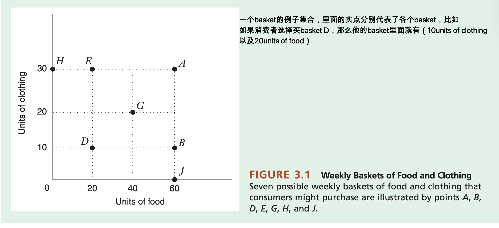</p>
  </li>
  <li><strong>Consumer Preferences</strong>：指的是给定两个basket，假定basktes都不需要任何cost的情况下，消费者会如何rank这两个basket</li>
  <li><strong>Assumptions about consumer preferences</strong>（首先必然是消费者是理智的）
    <ul>
      <li>Preferences are complete：消费者必须“有能力”去找到自己最喜欢的那个，<strong>注意</strong>：equally喜欢也是允许的</li>
      <li>Preferences are transitive: 就是说如消费者偏好A多过B，偏好B多过D，那么他必定偏好A多过D</li>
      <li>More is better：两个basket，如果能控制剩余的商品数量一样，那么消费者必然偏好剩下的商品更多的那个basket，根据这个原则在上面那张图里面，消费者在全局必然最偏好A</li>
    </ul>
  </li>
  <li>以上的assumption在现实生活中往往不那么显然的存在，这是因为现实生活中变化太多了</li>
  <li><strong>Ordinal Ranking</strong>: give us information about the order in which a consumer ranks baskets。只包含简单的次序，也就是说只能看出来消费者更加喜欢哪个，却很难看出来消费者有多喜欢。</li>
  <li><strong>Cardinal Ranking</strong>: give us information about the intensity of a consumer’s preferences。Cardinal ranking还给了喜欢的强度，我们不仅知道消费者在A和B之间更喜欢B，我们甚至还知道消费者喜欢B多过A多多少</li>
</ul>

<h3 id="32-utility-functions">3.2 Utility Functions</h3>

<ul>
  <li><strong>Utility Function</strong>: A utility function measures the level of satisfaction that a consumer receives from any basket of goods. We can represent the utility function with algebra or a graph.
    <ul>
      <li>\( U(y)=\sqrt(y) \)就是一个简单的utility function的例子，他衡量的是某人购买了y件产品，他的utility值是多少</li>
    </ul>
  </li>
  <li><strong>Marginal Utility</strong>：又到了导数的概念，marginal utility指的是rate of change in U respect to change in y。就是how the level of satisfaction will change in response to a change in the level of consumption</li>
</ul>

<script type="math/tex; mode=display">% <![CDATA[
\begin{aligned}
& MU = \frac{dU}{dy}
\end{aligned} %]]></script>

<div class="highlighter-rouge"><div class="highlight"><pre class="highlight"><code>因为这个不需要化简单位，所以在图像上，marginal utility就是在utility function函数上某一点的切线斜率
</code></pre></div></div>

<ul>
  <li>
    <p>然后根据这个导数又得出了一个经济学的理论：The additional satisfaction that ppl receives from consuming more of a good depends on how much of the good she already consumed</p>

    <p>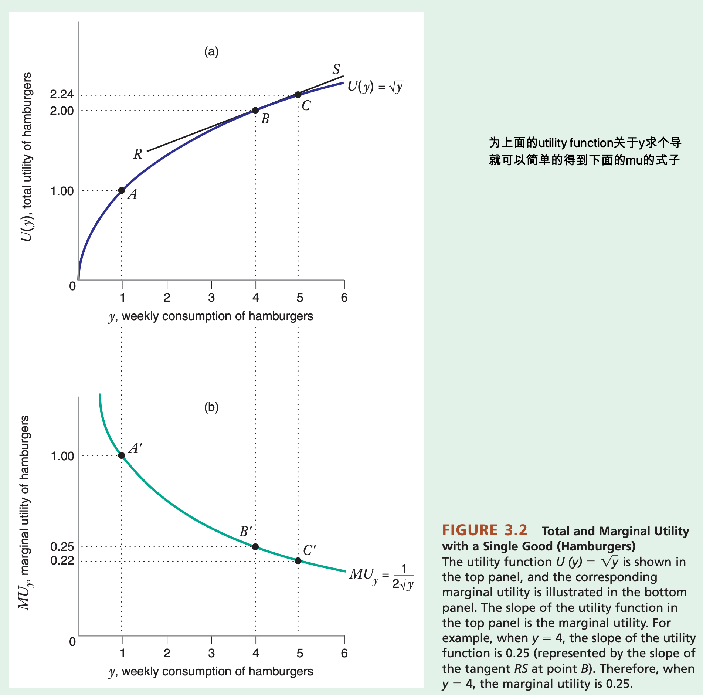</p>
  </li>
  <li>
    <p>在经济学中所有的边际关系都是像这样用导数来衡量的</p>
  </li>
  <li>
    <p><strong>Principle of diminishing marginal utility</strong>：After some point, as consumption of a good increases, the marginal utility of that good will begin to fall. 这个也很符合人类的行为，因为当我们越多的消费一个东西的时候，每多消费这样的东西带来的效益就没有之前那么高了</p>
  </li>
</ul>

<h3 id="preferences-with-multiple-goods-marginal-utility-indifference-curves-and-the-marginal-rate-of-substitution">Preferences with multiple goods: Marginal Utility, Indifference Curves and the marginal rate of substitution</h3>
<ul>
  <li>
    <p>单个产品的utility function作用并没有很大，我们在生活中往往需要衡量多个商品对自己的utility，假设for any basket(x, y)，utility function是\( U = \sqrt{(xy)} \)，那么他的utility function的图如下</p>

    <p>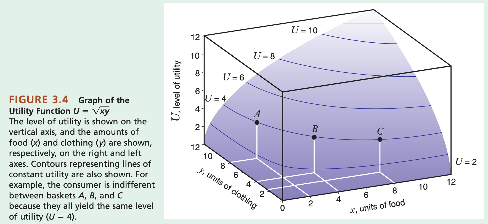</p>
  </li>
  <li><strong>多个产品的边际效用的计算</strong>：计算多个产品边际效用很简单：控制住n-1个产品的consumption为常量就好了：The marginal utility of any one good is the rate at which total utility changes as the level of consumption of that good rises, holding constant the levels of consumption of all other goods.</li>
  <li>\( \sqrt{xy} = \sqrt{x} \times \sqrt{y} \)</li>
  <li>在计算的时候，给定一个basket，只可以分别计算他们各商品的MU</li>
  <li>如果\( U = \sqrt{xy} \), 那么\( MU_{x} = \frac{\sqrt{y}}{2\sqrt{x}} \)，\( MU_{y} = \frac{\sqrt{x}}{2\sqrt{y}} \)</li>
  <li>
    <p>注意，这个理论基础比较虚，要根据实际的效用函数来看他的mu的性质</p>
  </li>
  <li><strong>Indifference Curve</strong>: A curve connecting a set of consumption baskets that yield the same level of satisfaction to the consumer.</li>
</ul>

<p>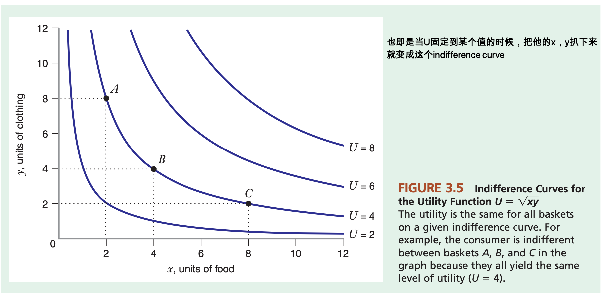</p>

<ul>
  <li>所以对于布兰登来说，他indifferent in A，B和C，因为他们都有同样的效用值</li>
  <li>上面那个也被称为indifference map</li>
  <li>indifference curve的四个性质：
    <ul>
      <li>When the consumer likes both goods (i.e., when MUx and MUy are both positive), all the indifference curves will have a negative slope
        <ul>
          <li>这个证明也很简单，Points to the northeast or southwest of A cannot be on the same indifference curve as A because they will be preferred to A or less preferred than A, respectively. Thus, points on the same indifference curve as A must lie either to the northwest or southeast of A.</li>
        </ul>
      </li>
      <li>Indifference curves cannot intersect</li>
      <li>Every consumption basket lies on one and only one indifference curve</li>
      <li>Indifference curves are not “thick.”</li>
    </ul>
  </li>
  <li><strong>Marginal rate of substitution</strong>：The rate at which the consumer will give up one good to get more of another, holding the level of utility constant. 比较关键的概念是他hold the level of utility constant -&gt; 在utility值保持不变的情况下，消费者愿意放弃多少某商品从而获得更多的商品，虽然说我们这一章讲的preference都是不计成本的，但问题是utility值现在变成了一个限制
    <ul>
      <li>a consumer’s <strong>marginal rate of substitution</strong> of <strong>hamburgers for lemonade</strong> is the <strong>rate at which the consumer would be willing to give up glasses of lemonade to get more hamburgers, with the same overall satisfaction.</strong></li>
      <li>表现在indifference map上面就是，一条indifference curve的斜率</li>
      <li>假设现在两个商品分别是x和y，那么\( \frac{dy}{dx} \)代表了<strong>The rate of change of y relative to the change of x = Marginal rate of substitution of x for y</strong> -&gt; 为了得到x，需要放弃多少y，可以这么理解：change of y relative to x，说明y的变化随着x而变化，说明我们是自己控制x，“为了得到x”就对应了这个性质</li>
    </ul>
  </li>
  <li><strong>Indifference Map for consumer is given exogenously and remains fixed</strong></li>
  <li>非常重要的公式，这个公式的推导是根据在indifference curve上的x和y的任何增量都不会影响u的值：
    <ul>
      <li>\( \Delta U = MU_{x}(\Delta x) + MU_{y}(\Delta y) \)</li>
      <li>\( 0 = MU_{x}(\Delta x) + MU_{y}(\Delta y) \)</li>
      <li>\( -MU_{x}(\Delta x) = MU_{y}(\Delta y) \)</li>
      <li>根据以上推理出来最终的MRS的公式是：</li>
    </ul>

    <script type="math/tex; mode=display">% <![CDATA[
\begin{aligned}
  & MRS_{x, y} = \frac{dy}{dx} = -\frac{dy}{dx} = \frac{MU_{x}}{MU_{y}}
  \end{aligned} %]]></script>
  </li>
  <li>
    <p><strong>negative of the slope of the indifference curve on a graph with x on the horizontal axis and y on the vertical axis</strong></p>
  </li>
  <li>
    <p><strong>Diminishing Marginal rate of substitution</strong>: A feature of consumer pref- erences for which the marginal rate of substitution of one good for another good diminishes as the consumption of the first good increases along an indifference curve.一开始的时候，因为消费者消费x的数量不多，所以消费者很乐意去拿许多的y去换一个x，但是他占有x的数量越来越多，占有y的数量越来越少，消费者会不那么乐意用那么多的y去换一个x了。根据indifference也可以看出这个性质</p>
  </li>
  <li>
    <p><strong>Draw indifference graph</strong>: 给定一个utility function，给定一个utility值，要如何画indifference graph-&gt;只需要找出适当的x，y组合令utility值等于要求的utility值，这样就可以找出一个点，然后继续找下一个点，多找几个点就可以把线给描出来了</p>

    <ul>
      <li>如果问你可不可以和纵轴/横轴相交，用原函数式+x或y等于0去反推</li>
    </ul>
  </li>
  <li>做这种题目要时刻记住：只要MUx和MUy都是positive，那么他们的indifference curve就一定是negative slope</li>
</ul>

<h3 id="33-special-preferences">3.3 Special Preferences</h3>

<ul>
  <li><strong>Perfect Substitutes</strong>：<strong>Two goods are perfect substitutes when the marginal rate of substitution of one for the other is a constant</strong>。也就是说，不管他已经获得了多少某种产品，消费者都会愿意用一定数量的产品去交换一定数量的另外一种产品。这类商品之间的MRS是个常量
    <ul>
      <li>More generally, indifference curves for perfect substitutes are straight lines, and the marginal rate of substitution is constant, though not necessarily equal to 1</li>
      <li>比如一个人愿意用2个P换取1个W，那么他的Utility function就是：U = P + 2W</li>
    </ul>
  </li>
  <li>
    <p><strong>Perfect Complements</strong>：(in consumption) Two goods that the consumer always wants to consume in fixed proportion to each other. 比如一双袜子：左边袜子和右边袜子</p>

    <p>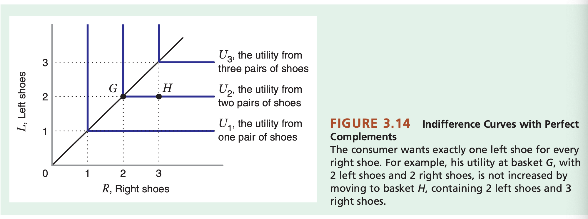</p>

    <ul>
      <li>以上这个例子就是perfect complement的例子：\( U(R, L) = 10min(R, L) \)</li>
    </ul>
  </li>
  <li><strong>The Cobb-Douglas utility function</strong>: 形如\( U=\sqrt(xy) \)或者是\( U = xy \)这样子的utility function都被称为cobb-douglas utility function, 更general的表示是\( U=Ax^{\alpha}y^{\beta} \), 其中\(A, \alpha, \beta \)都属于positive constant
    <ul>
      <li>这类的utility function都有其三个性质：
        <ul>
          <li>The marginal utilities are positive for both goods.</li>
          <li>Since the marginal utilities are both positive, the indifference curves will be downward sloping.</li>
          <li>The Cobb–Douglas utility function also exhibits a diminishing marginal rate of substitution.(也就是说他的函数会慢慢变平，趋于饱和)</li>
        </ul>
      </li>
    </ul>
  </li>
  <li>
    <p><strong>Quasilinear utility function</strong>：A utility function that is linear in at least one of the goods consumed, but may be a nonlinear function of the other good(s).</p>

    <p>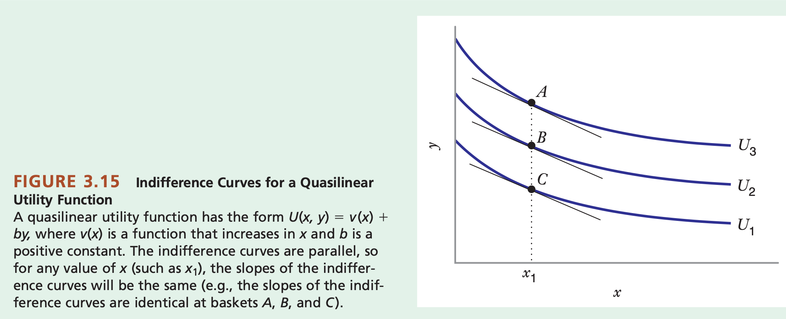</p>

    <ul>
      <li>The distinguishing characteristic of a quasilinear utility function is that, as <strong>we move due north on the indifference map, the marginal rate of substitution of x for y remains the same. That is, at any value of x, the slopes of all of the indifference curves will be the same, so the indifference curves are parallel to each other.</strong></li>
      <li>At any value of x, the slope of all of the indifference curves(and hence the MRS_{x, y})will be the same</li>
    </ul>
  </li>
</ul>

<h2 id="4-consumer-choice">4 Consumer Choice</h2>
<ul>
  <li>Theory of Consumer Choice, explaining how consumers allocate their limited incomes among available goods and services.</li>
  <li>Write the equation of the budget constraint and graph the budget line.</li>
  <li>Illustrate graphically how a change in income or a change in a price affects the budget line.</li>
  <li>Describe the conditions for optimal consumer choice.</li>
  <li>Illustrate graphically the tangency condition for optimal consumer choice.</li>
  <li>Solve for an optimal consumption basket, given information about income, prices, and marginal utilities.</li>
  <li>Explain why the optimal consumption basket solves both a utility maximization problem and an expendi- ture minimization problem.</li>
  <li>Explain why the optimal consumption basket could occur at a corner point.</li>
  <li>Illustrate the budget line and optimal consumer choice graphically when one of the goods a consumer can choose is a composite good.</li>
  <li>Describe the concept of revealed preference.</li>
  <li>Employ the concept of revealed preference to determine whether observed choices are consistent with utility maximization.</li>
</ul>

<h3 id="41-the-budget-constraint">4.1 The Budget constraint</h3>
<ul>
  <li><strong>The budget cnsrtaint</strong> defines the set of baskets that a consumer can purchase with a limited amount of income.</li>
  <li>
    <p>假设I是income，那么：The budget line indicates all of the combinations of food (x) and clothing ( y) that Eric can purchase if he spends all of his available income on the two goods. It can be expressed as</p>

    <script type="math/tex; mode=display">P_{x} x + P_{y} y = I</script>
  </li>
</ul>

<p>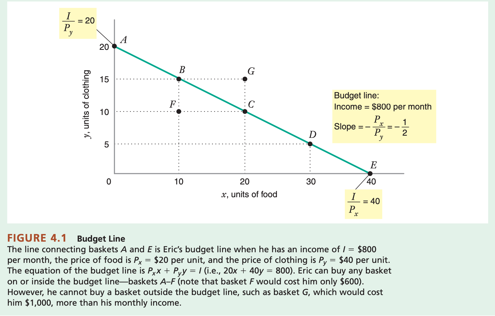</p>

<ul>
  <li>显而易见的是，只要在budget line，x轴，和y轴包围的空间里面，他随便选，但在这个空间之外，就是不行的了，而budget constraint的式子是\( P_{x}x + P_{y} y \leq I \)</li>
  <li><strong>budget line的斜率</strong>: Thus, the slope of the budget line tells us <strong>how many units of the good on the vertical axis a consumer must give up to obtain an additional unit of the good on the horizontal axis.</strong> 和MRS有点像，不过又不尽一样，因为MRS控制的是utility相等，而这个控制的是开销相等</li>
  <li>
    <p>如果收入变多了，那么budget line向上平行移动</p>

    <p>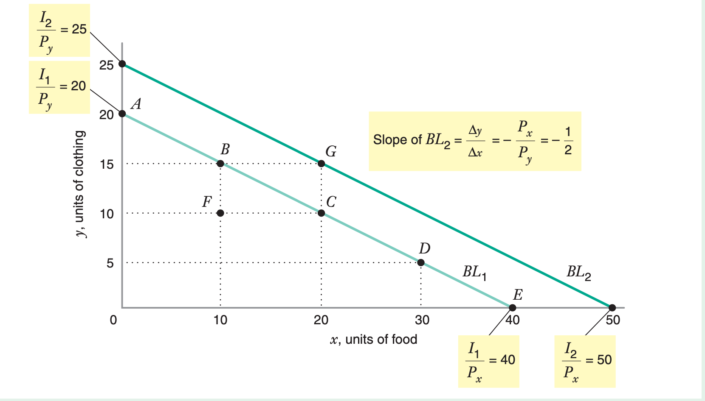</p>
  </li>
  <li>
    <p>如果一个商品的价格改变了的话，这个budget line会“旋转”，像下面这样：</p>

    <p>&lt;img src+”assets/post_pics/Snipaste_2020-05-25_20-05-36.png”&gt;</p>
  </li>
  <li>Thus, an increase in the price of one good moves the intercept on that good’s axis toward the origin. Conversely, a decrease in the price of one good would move the intercept on that good’s axis away from the origin.</li>
  <li><strong>假设工资和商品的价格同时涨到了本来的2倍，那么这对于budget line没有任何影响</strong></li>
</ul>

<h3 id="42-optimal-choice">4.2 Optimal Choice</h3>
<ul>
  <li><strong>Optimal Choice</strong>: Consumer choice of a basket of goods that (1) maximizes satisfaction (utility) while (2) allowing him to live within his budget constraint. 分为两个部分来讨论最佳选择：在不超过自己工资承受范围的情况下的同时最大化效用值</li>
  <li>optimal choice绝对在budget line上</li>
  <li>整理一下，这个optimal choice的问题是：</li>
</ul>

<script type="math/tex; mode=display">% <![CDATA[
\begin{aligned}
& \mathop{max}_{(x, y)} U(x, y) \\
& subject\ to:\ P_{x}x + P_{y}y \leq I
\end{aligned} %]]></script>

<ul>
  <li>大致分了一下endogenous/exogenous
    <ul>
      <li>Endogeneous Variable: x, y</li>
      <li>Exogeneous Variable: Prices, Income</li>
    </ul>
  </li>
</ul>

<p>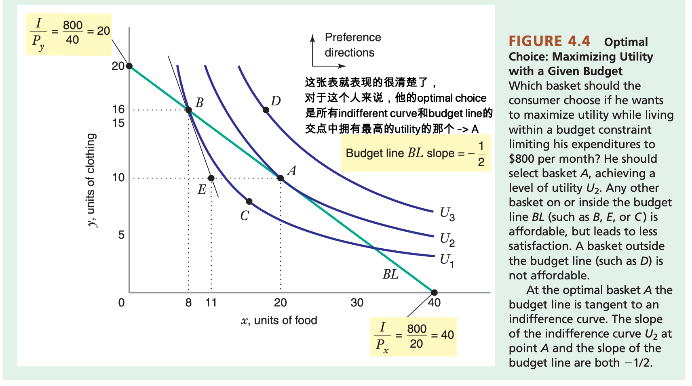</p>

<ul>
  <li>
    <p>Diminishing MRS的图上表示是：because the indifference curves are bowed in toward the origin (in economic terms, because there is diminishing marginal rate of substitution of x for y)</p>
  </li>
  <li>同时，有个算式是：\( \frac{MU_{x}}{MU_{y}} = \frac{P_{x}}{P_{y}}  \) <strong>The optimum occurs at a point where the budget line is tangent to the indifference curve.</strong></li>
  <li>\( \frac{MU_x}{P_x} = \frac{MU_y}{P_y} \) <strong>Put another way, at an interior optimum, the extra utility per dollar spent on good x is equal to the extra utility per dollar spent on good y.</strong></li>
  <li><strong>Interior Optimum</strong>: An optimal basket at which a consumer will be purchasing positive amounts of all commodities.消费者不会不买任何产品
    <ul>
      <li>an interior optimal basket, the consumer chooses commodi- ties so that the ratio of the marginal utilities (i.e., the marginal rate of substitution) equals the ratio of the prices of the goods.</li>
    </ul>
  </li>
  <li>如果MUx和MUy都是正数，那么optimal choice会在budget line上面</li>
  <li>如果存在diminishing marginal rate of substitution，那么interior optimal consumption会出现在indifferent curve和budget line相切的地方</li>
  <li>在看待这个优化问题的时候，当然存在别的角度：What basket should the consumer choose to minimize his expenditure (Px x  Py y) and also achieve a given level of utility U2?</li>
</ul>

<script type="math/tex; mode=display">% <![CDATA[
\begin{aligned}
& \mathop{min}_{(x, y)} expenditure = P_{x}x + P_{y}y \\
& subject\ to:\ U(x, y) = U_{2}
\end{aligned} %]]></script>

<ul>
  <li>这样的问题被称为：<strong>expenditure minimization problem</strong></li>
</ul>

<p>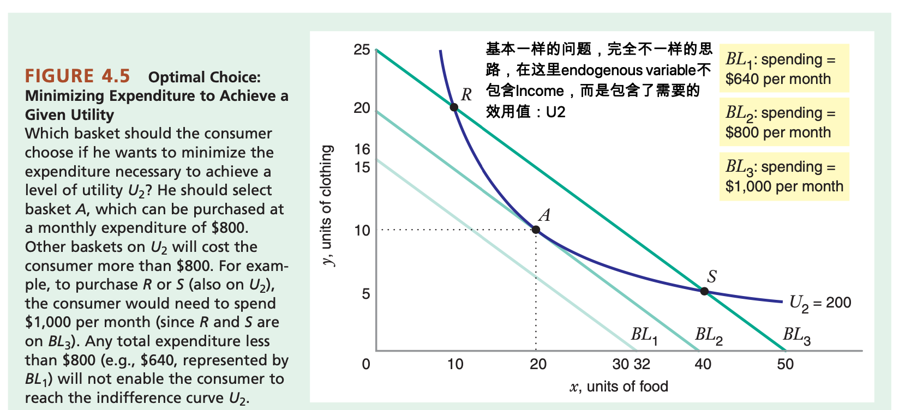</p>

<ul>
  <li>
    <p>The consumer can increase utility if he continues to spend $800 monthly, or he can spend less money to stay at the same level of utility he is currently realizing at B.</p>
  </li>
  <li>
    <p><strong>Corner Points</strong>: A solution to the consumer’s optimal choice problem at which some good is not being consumed at all, in which case the optimal basket lies on an axis.</p>
  </li>
</ul>

<p>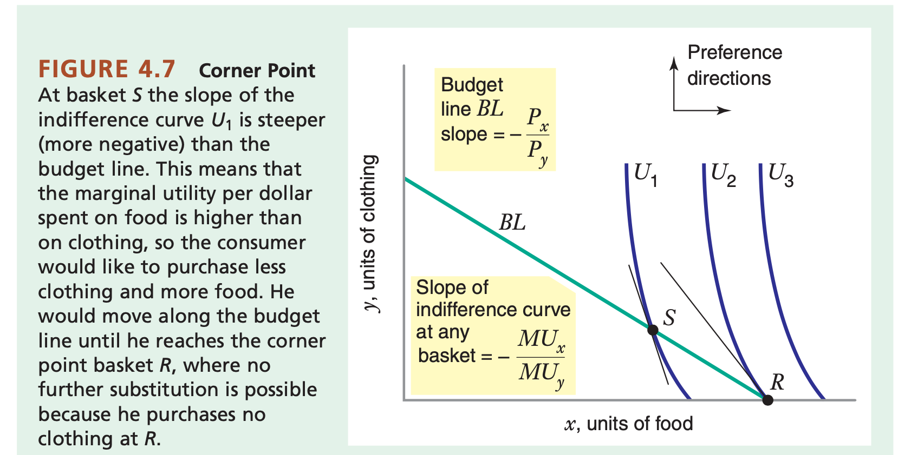</p>

<ul>
  <li>
    <p>上图就阐明了一种这样子的关系，当没有一条indifferent curve和bl相切。并且这三条indifferent curve的都比BL要更加的斜，经过证明，这代表了：\( \frac{MU_x}{P_x} \lt \frac{MU_y}{P_y} \)，也就是说明tells us the marginal utility per dollar spent is higher for food than for clothing, so the consumer would like to purchase more food and less clothing. 所以消费者必定会选择R（把food选到最大）</p>
  </li>
  <li>
    <p>如果要找有拐点的optimal value：先通过计算斜率等大致说出indifference curve和bl的一些性质（凸起还是凹下啊），陈述拐点的可能存在，然后根据MUx/MUy = Px/Py试图找切点，找到悖论证明切点不存在，说明最优解在拐点，直接算拐点的时候的utility值</p>
  </li>
</ul>


</article>

<div class="page-navigation code">
	
    <a class="next" href="http://localhost:4000/java-on-call-4" title="NEXT: Java On Call 4">&lt;&lt;</a>
		<span> &middot; </span>
  
		<a class="home" href="http://localhost:4000/" title="Back to Index">Index</a>
  
		<span> &middot; </span>
    <a class="prev" href="http://localhost:4000/all-my-past-notes" title="PREV: All My Past Notes">&gt;&gt;</a>
  
</div>

<!-- Link Gitalk 的支持文件  -->
<link rel="stylesheet" href="https://unpkg.com/gitalk/dist/gitalk.css">
<script src="https://unpkg.com/gitalk@latest/dist/gitalk.min.js"></script> 
<script type="text/javascript" src="/assets/js/md5.min.js"></script>
<div id="gitalk-container"></div>     
<script type="text/javascript">
    var gitalk = new Gitalk({
    // gitalk的主要参数
        clientID: 'f075f01270dae871aa15',
        clientSecret: '5a97f06edaad9527cb4a92d6d1ee12a86ec73057',
        repo: 'michaeltaoma.github.io',
        owner: 'michaeltaoma',
        admin: ['michaeltaoma'],
        id: md5(location.pathname),
        
    });
    gitalk.render('gitalk-container');
</script> 
<!-- Gitalk end -->


		</div>

		<div class="footer">
  <span class="block">&copy; 2020 Tao Ma</span>
  <span class="block"><small>&lt;/&gt; Powered by <a href="https://jekyllrb.com/">Jekyll</a> and <a href="https://github.com/heiswayi/the-plain">The Plain theme</a>.</small></span>
</div>


	</body>

</html>
